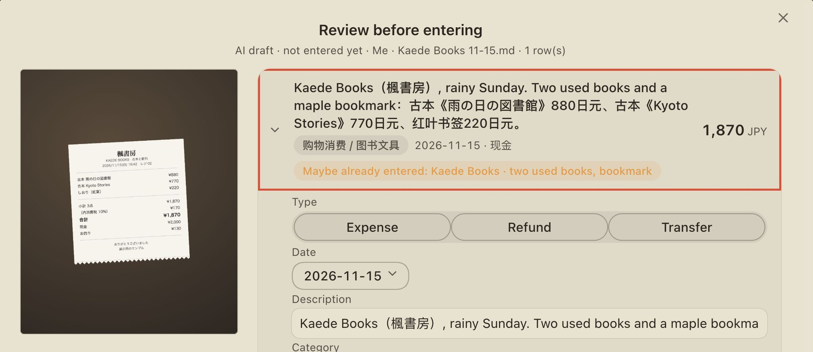
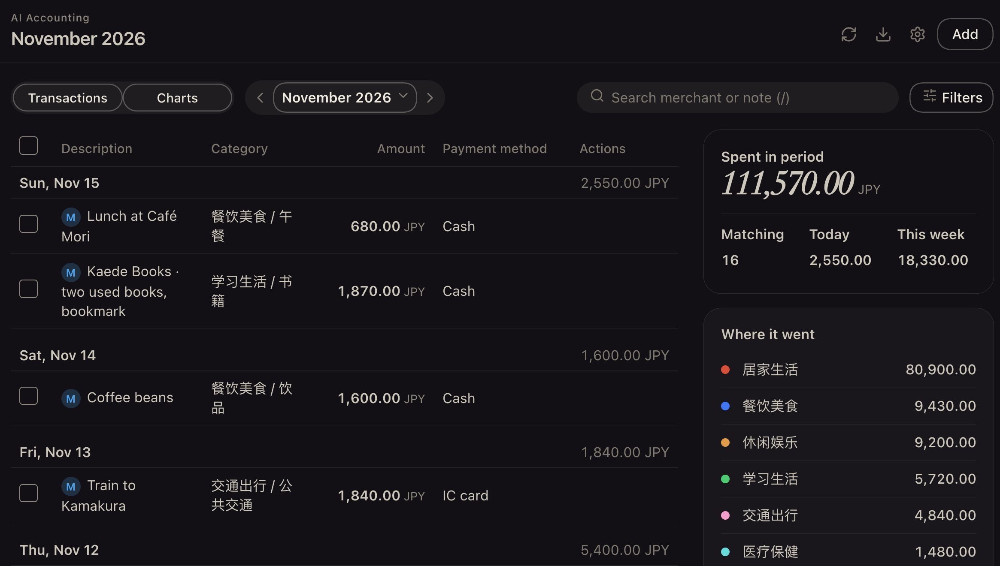
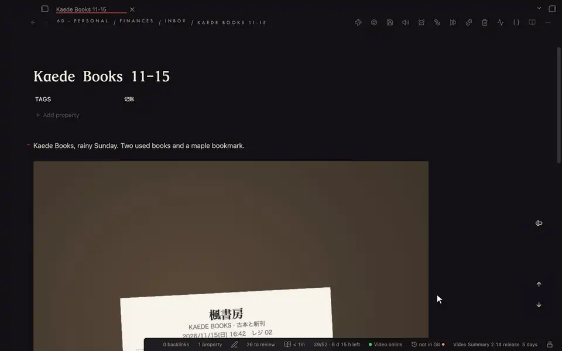

AI ACCOUNTING
A receipt in, a checked ledger entry out.
The AI reads the photo and drafts the line. Nothing goes into your books until you check it.
- 1Reads receiptsAI drafts
- 1Your checkevery line
- 1Markdown ledgera table a month
- 1Any currencykept as paid
- 1Refunds, transferscounted right
- 1Budgets, charts, CSVbuilt in
Run one command on the note.
Photos embedded in the note, or dropped into an inbox folder, are read by the AI service you choose: date, shop, category, amount, currency and how you paid.

Every line waits for you.
Fix what was misread, mark a refund or a transfer, or leave a row out. A line that looks like one you already entered says so: Maybe already entered. Close the dialog and the draft is kept.
It lands in a plain Markdown table.
One table a month, in your vault, readable and editable without the plugin. The ledger view groups it by day, totals the month and shows where the money went.

From photo to ledger in one pass.

TOTAL
1,870JPY
Draft. Not in your books yet.
- Pluginfree, no account
- Reading receiptsyour own AI key, or a local model
- By hand, charts, CSVno AI needed
- Runs onObsidian 1.13+, desktop and mobile